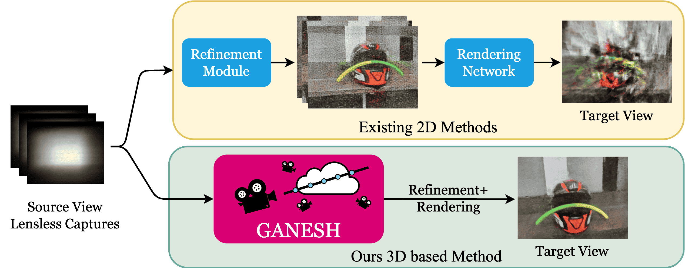

|
Rohit Choudhary I am a M.S. research scholar at department of Electrical Engineering, IIT Madras, where I am working under the guidance of Dr. Kaushik Mitra and Dr. Mansi Sharma. I am working on developing deep learning methods for low-light image enhancement and scene depth estimation. Prior to joining the M.S program at IIT Madras, I completed my undergraduate studies in Electronics and Communication Engineering from the National Institute of Technology Kurukshetra, India. Email / CV / Google Scholar / LinkedIn / Github |
{kind=link}
News
|
ResearchI'm interested in computer vision, machine learning and image processing. Most of my research has been focused on advancing scene depth estimation and low light image enhancement. |
|

|
GANESH: Generalizable NeRF for Lensless Imaging
Rakesh Raj Madavan, Akshat Kaimal, Badhrinarayanan K V, Vinayak Gupta, Rohit Choudhary, Chandrakala Shanmuganathan, Kaushik Mitra. IEEE/CVF Winter Conference on Applications of Computer Vision (WACV) 2025. Arxiv Link/ Project page Framework for simultaneous 3D refinement and novel view synthesis from multi-view lensless images, supporting on-the-fly inference and scene-specific tuning. |
|
|
2T-UNET: A Two-Tower UNet with Depth Clues for Robust Stereo Depth Estimation
Rohit Choudhary*, Mansi Sharma*, Rithvik Anil, Second Workshop for Learning 3D with Multi-View Supervision (3DMV), CVPR 2024. Paper Link/ ArXiv Robust stereo depth estimation perform incredibly well on complex natural scenes. |
|
|
MEStereo-Du2CNN: a dual-channel CNN for learning robust depth
estimates from multi-exposure stereo images for HDR 3D applications
Rohit Choudhary, Mansi Sharma, T.V. Uma, Rithvik Anil, The Visual Computer Journal, 2023 Paper link / Github page / arXiv / Supplementary file Exploring the utilization of a High Dynamic Range (HDR) reconstruction process to forecast depth, thereby opening up the potential of achieving 3D HDR through a unified pipeline. |
|
|
ELEGAN: An efficient low light enhancement for unpaired supervision
Rohit Choudhary, T Harshith Reddy, Mansi Sharma IEEE International Conference on Image Processing (ICIP), 2023 Paper link / Presentation video ELEGAN, a lightweight attention-guided generative adversarial network for fast low-light image enhancement in a fully unsupervised manner. |
|
|
SDE-DualENet: A Novel Dual Efficient Convolutional Neural Network for Robust Stereo Depth Estimation
Rithvik Anil, Mansi Sharma, Rohit Choudhary IEEE Visual Communications and Image Processing (VCIP), 2023 Paper link Eliminating cost-volume construction in stereo disparity estimation. |

|
A High Resolution Multi-exposure Stereoscopic Image & Video Database of Natural Scenes
Rohit Choudhary, Mansi Sharma, Aditya Wadaskar arXiv, 2022 Webpge / ArXiv A diversified stereoscopic multi-exposure dataset captured within the campus of IIT Madras. |
|
Website credits to Jon Barron. |